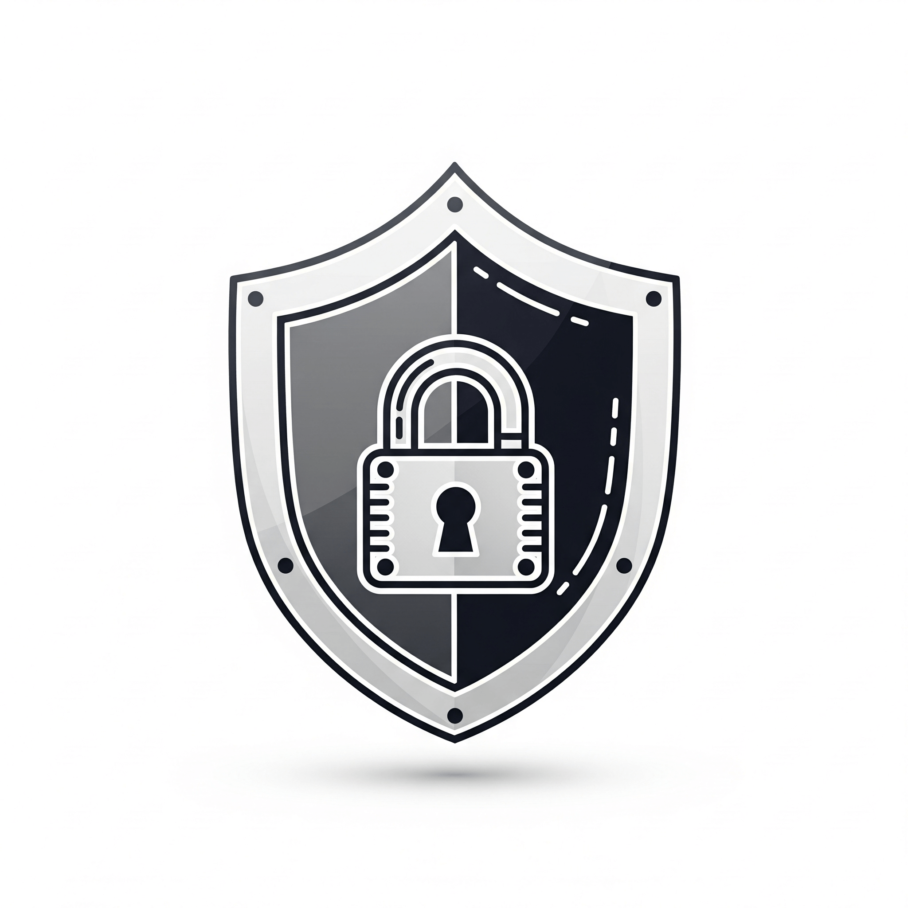
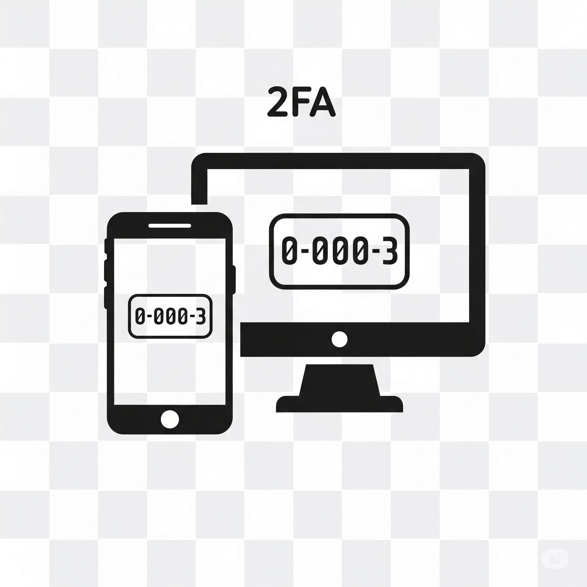
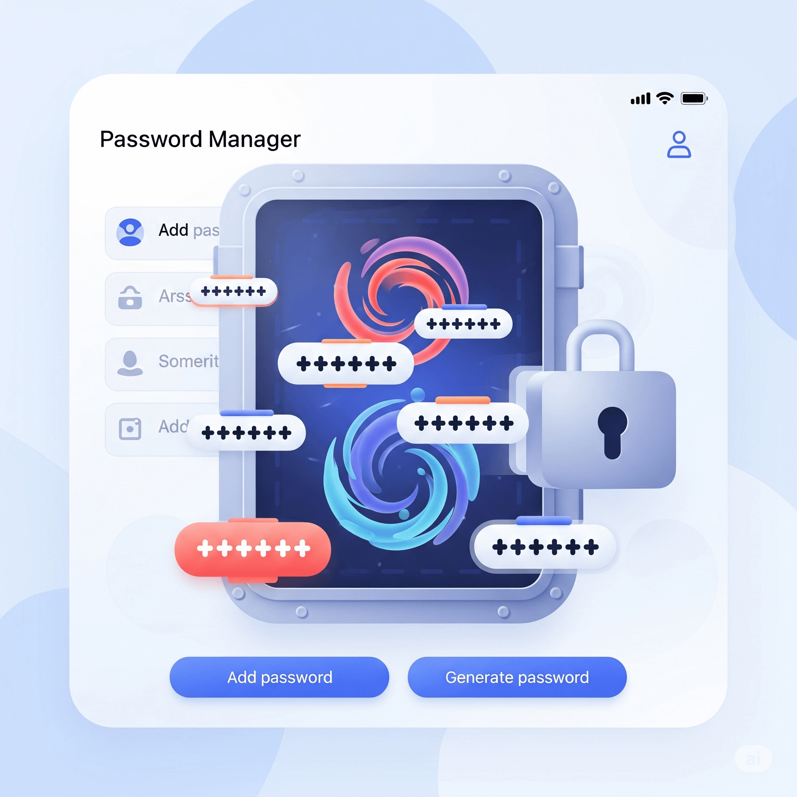

CYBERSÉCURITÉ : SE PROTÉGER ET PROTÉGER SES DONNÉES
Situation Déclenchante
Lundi matin, 8h02. Tu allumes ton PC, impatient de rejoindre tes amis sur Fortnite. Soudain, une notification apparaît : "Félicitations ! Tu as été sélectionné pour recevoir 10 000 V-Bucks GRATUITS ! Clique ici pour les réclamer avant qu'il ne soit trop tard !". L'email semble officiel, avec le logo du jeu. Ton cœur s'accélère. Est-ce le jour de chance que tu attendais ? Ou bien, derrière ce cadeau trop beau pour être vrai, se cache un piège redoutable prêt à aspirer tes données personnelles, ton mot de passe, voire l'argent de tes parents ? Cette question n'est pas un jeu. C'est le point de départ de notre mission : devenir un maître de la sécurité numérique.
Ta mission, si tu l'acceptes...
Compétences à maîtriser :
- Identifier les menaces courantes (hameçonnage, rançongiciel, malware).
- Appliquer les règles d'une bonne hygiène numérique au quotidien.
- Gérer tes mots de passe de manière ultra-sécurisée.
- Paramétrer les options de confidentialité d'un service en ligne pour garder le contrôle.
Savoirs et connaissances à acquérir :
- Cybersécurité : qu'est-ce que c'est vraiment ?
- Menaces : Phishing, Ransomware, Virus... Connaître son ennemi.
- Ingénierie sociale : la manipulation psychologique.
- Authentification : simple, forte/2FA... Les clés du château numérique.
- Chiffrement (cryptage) : le langage secret des données.
- Données personnelles (RGPD) : tes données, tes droits.
- Empreinte numérique : les traces que tu laisses en ligne.
Introduction et Problématique
L'email de V-Bucks n'est qu'un exemple parmi des milliards de tentatives de cyberattaques qui ont lieu chaque jour. Notre vie entière est désormais numérique : nos amis, nos devoirs, nos jeux, nos photos... Cet univers connecté est fantastique, mais il est aussi un terrain de chasse pour des personnes mal intentionnées. Le but n'est pas d'avoir peur d'Internet, mais de comprendre ses règles pour en profiter en toute sécurité.
Notre problématique sera donc la suivante : Comment utiliser les outils numériques (sites web, applications, messageries) de manière éclairée et sécurisée pour protéger notre identité et nos informations personnelles ?
Pour y répondre, nous allons d'abord définir ce qu'est la cybersécurité et identifier les principales menaces. Ensuite, nous plongerons au cœur des mécanismes de défense comme l'authentification forte et le chiffrement. Enfin, nous apprendrons à gérer nos propres données pour maîtriser notre empreinte numérique.
Exploration en Profondeur
Cybersécurité
a) 🎓 Définition Académique et Enjeux :
La cybersécurité désigne l'ensemble des lois, processus, dispositifs et technologies visant à protéger les systèmes informatiques (ordinateurs, serveurs, réseaux, appareils mobiles) et les données qu'ils contiennent contre les attaques, les dommages ou les accès non autorisés. L'enjeu est colossal : il s'agit de garantir l'intégrité des infrastructures critiques (hôpitaux, centrales électriques), la confidentialité des informations personnelles et la stabilité de l'économie mondiale.
b) 🧠 Analogie et Simplification Pédagogique :
Pense à la cybersécurité comme à la sécurité de ta maison. Tu as une porte (le pare-feu), une serrure (le mot de passe), peut-être une alarme (l'antivirus) et un judas pour vérifier qui sonne (l'authentification). La cybersécurité, c'est organiser toutes ces défenses pour empêcher les "cambrioleurs numériques" d'entrer.
c) 📱 Étude de Cas Concrète :
Quand tu te connectes à un site web sécurisé (HTTPS), tu pratiques la cybersécurité. Le "S" signifie que la connexion entre ton navigateur et le site est protégée. De même, utiliser un gestionnaire de mots de passe est un acte de cybersécurité fondamental pour protéger tous tes comptes.
d) 🛠️ Décortiquage Technique - "Sous le Capot" :
Pour vérifier si un site est sécurisé, regarde la barre d'adresse de ton navigateur. Repère le petit cadenas fermé et l'adresse qui commence par "https://". Clique sur le cadenas : ton navigateur te donnera des informations sur le "certificat de sécurité" du site, sa carte d'identité numérique qui prouve qu'il est bien qui il prétend être.
e) 🤔 Points de Vigilance et Erreurs à Éviter :
1) Penser que "ça n'arrive qu'aux autres". Tout le monde est une cible. 2) Utiliser le même mot de passe partout. Si un site est piraté, tous tes comptes sont en danger. 3) Croire qu'un antivirus gratuit suffit à tout bloquer. La première défense, c'est ta prudence.
f) 💡 Le Saviez-Vous ? / Anecdote Technologique :
Le coût mondial de la cybercriminalité est estimé à plusieurs milliers de milliards de dollars chaque année, soit plus que le PIB de nombreux pays !
g) 🤝 Ponts Interdisciplinaires :
En Histoire, on peut comparer la cybersécurité à l'espionnage et au contre-espionnage pendant la Guerre Froide (décoder des messages secrets, infiltrer des réseaux...). En Anglais, la majorité des termes (phishing, malware, firewall) viennent de cette langue.
h) 🚀 Pour les Experts (Approfondissement) :
Le domaine de la cybersécurité offre de nombreux métiers d'avenir : "Pentester" (testeur d'intrusion) qui joue le rôle du hacker pour trouver les failles, analyste en cybersécurité, architecte sécurité... Défi : essaie de trouver des offres d'emploi pour ces métiers et regarde les compétences demandées.
Menaces (Phishing, Ransomware, Virus...) et Ingénierie Sociale
a) 🎓 Définition Académique et Enjeux :
Les menaces sont des dangers potentiels pour un système d'information. On distingue les malwares (logiciels malveillants) comme les virus (s'attachent à des fichiers), les vers (se propagent sur les réseaux) et les rançongiciels (ransomware) qui chiffrent tes données et demandent une rançon. Le phishing (hameçonnage) est une technique d'ingénierie sociale, qui consiste à manipuler la psychologie humaine (confiance, peur, appât du gain) pour obtenir des informations confidentielles, plutôt que d'attaquer directement la machine.
b) 🧠 Analogie et Simplification Pédagogique :
L'ingénierie sociale, c'est l'art de l'arnaque. Imagine un faux facteur qui te demande d'ouvrir ta porte parce qu'il a un "colis urgent pour toi". Il ne force pas la serrure, il te convainc de lui ouvrir toi-même. L'email de phishing, c'est ce faux facteur dans ta boîte mail.
c) 📱 Étude de Cas Concrète :
Notre email de phishing pour des V-Bucks est un cas d'école. Il utilise l'ingénierie sociale en créant un sentiment d'urgence ("avant qu'il ne soit trop tard") et en exploitant ton désir d'obtenir quelque chose gratuitement. Le lien ne mène pas au vrai site de Fortnite, mais à une copie parfaite conçue pour voler le mot de passe que tu vas taper.
d) 🛠️ Décortiquage Technique - "Sous le Capot" :
Pour analyser un email de phishing : 1) Ne clique JAMAIS sur le lien. 2) Survole le lien avec ta souris (sans cliquer) : l'adresse qui s'affiche en bas de ton navigateur est-elle la vraie adresse du site (par ex. `epicgames.com`) ou une adresse bizarre (`epic-games.free-rewards.ru`) ? 3) Vérifie l'adresse de l'expéditeur. Est-elle officielle (`@epicgames.com`) ou générique (`@gmail.com`, `@outlook.fr`) ? 4) Cherche les fautes d'orthographe ou de grammaire, souvent présentes.
e) 🤔 Points de Vigilance et Erreurs à Éviter :
1) Se fier uniquement à l'apparence (logo, couleurs). Tout peut être copié. 2) Penser qu'un SMS ou un message sur les réseaux sociaux est plus sûr qu'un email. Le phishing (appelé "smishing" par SMS) existe sur tous les canaux. 3) Répondre à l'email, même pour insulter l'arnaqueur. Cela confirme que ton adresse est active.
f) 💡 Le Saviez-Vous ? / Anecdote Technologique :
Le terme "phishing" est un jeu de mots avec "fishing" (pêcher). Le "ph" viendrait des "phreakers", les premiers pirates informatiques des années 70 qui pirataient les lignes téléphoniques (phone).
g) 🤝 Ponts Interdisciplinaires :
En Français, l'étude de l'ingénierie sociale se rapproche de l'analyse des figures de style de la rhétorique et de la persuasion dans les discours ou la publicité. En SVT, on peut comparer un virus informatique à un virus biologique : tous deux ont besoin d'un "hôte" (un programme, une cellule) pour se répliquer et se propager.
h) 🚀 Pour les Experts (Approfondissement) :
Certains rançongiciels, comme WannaCry en 2017, ont infecté des centaines de milliers d'ordinateurs dans le monde en quelques heures, y compris des hôpitaux, en exploitant une seule faille de sécurité dans d'anciennes versions de Windows. Cela montre l'importance critique de faire ses mises à jour.
Authentification (simple, forte/2FA)
a) 🎓 Définition Académique et Enjeux :
L'authentification est le processus qui permet de vérifier l'identité d'un utilisateur ou d'un système. L'authentification simple repose sur un seul facteur (ce que l'on sait : un mot de passe). L'authentification forte (ou multifacteur, MFA) exige au moins deux facteurs indépendants parmi les trois catégories suivantes : ce que l'on sait (mot de passe), ce que l'on possède (téléphone, clé USB de sécurité), et ce que l'on est (empreinte digitale, visage). La 2FA (Two-Factor Authentication) est la forme la plus courante d'authentification forte.
b) 🧠 Analogie et Simplification Pédagogique :
Pour retirer de l'argent au distributeur, tu as besoin de deux choses : ta carte bancaire (ce que tu possèdes) ET ton code secret (ce que tu sais). C'est de l'authentification forte ! Un simple mot de passe, c'est comme avoir une clé pour ta maison. Si on te la vole, n'importe qui peut entrer. La 2FA, c'est comme si, en plus de la clé, il fallait un code unique envoyé sur ton téléphone pour pouvoir ouvrir la porte.
c) 📱 Étude de Cas Concrète :
L'Authentification à deux facteurs (2FA) est une option de sécurité cruciale sur tes comptes de jeux, réseaux sociaux ou emails. Quand tu l'actives, après avoir entré ton mot de passe, le service te demande un deuxième code, souvent généré par une application sur ton téléphone (Google Authenticator, Authy) ou envoyé par SMS. Même si un hacker vole ton mot de passe via un email de phishing, il ne pourra pas se connecter sans avoir aussi ton téléphone.
d) 🛠️ Décortiquage Technique - "Sous le Capot" :
Pour activer la 2FA sur un compte (ex: Instagram) : 1) Va dans "Paramètres". 2) Cherche la section "Sécurité". 3) Clique sur "Authentification à deux facteurs". 4) Choisis ta méthode : application d'authentification (le plus sûr) ou SMS. 5) Suis les instructions pour lier ton compte à l'application en scannant un QR Code. 6) Sauvegarde précieusement les "codes de secours" fournis. Ils te permettront de te connecter si tu perds ton téléphone.
e) 🤔 Points de Vigilance et Erreurs à Éviter :
1) Penser qu'un mot de passe complexe suffit. Il peut toujours être volé. 2) Utiliser la 2FA par SMS comme seule option. Les cartes SIM peuvent être piratées ("SIM swapping"). Privilégie les applications dédiées. 3) Ne pas sauvegarder les codes de secours et se retrouver bloqué hors de son propre compte.
f) 💡 Le Saviez-Vous ? / Anecdote Technologique :
Les gestionnaires de mots de passe, comme Bitwarden ou KeePass, sont des outils essentiels. Ils génèrent des mots de passe uniques et très complexes pour chaque site et les stockent de manière chiffrée. Tu n'as plus qu'à retenir un seul "mot de passe maître" très solide. Certains intègrent même la génération des codes 2FA !
g) 🤝 Ponts Interdisciplinaires :
En Mathématiques, la 2FA repose sur des algorithmes (comme TOTP - Time-based One-Time Password) qui génèrent des suites de nombres pseudo-aléatoires synchronisées entre le serveur et ton téléphone.
h) 🚀 Pour les Experts (Approfondissement) :
Le futur de l'authentification est "passwordless" (sans mot de passe). Les "Passkeys" (clés d'accès), basées sur la cryptographie et la biométrie de ton appareil (téléphone, ordinateur), permettent de se connecter à un site sans taper de mot de passe. C'est plus simple et beaucoup plus sécurisé. Regarde si tes services préférés le proposent déjà !
Chiffrement (Cryptage)
a) 🎓 Définition Académique et Enjeux :
Le chiffrement est un procédé de cryptographie qui consiste à transformer une information (un "texte en clair") en un "texte chiffré" inintelligible sans une clé de déchiffrement. Il garantit la confidentialité des données, que ce soit lors de leur transmission (communication) ou de leur stockage (sur un disque dur). L'enjeu est de rendre les données inutilisables pour quiconque les intercepterait.
b) 🧠 Analogie et Simplification Pédagogique :
Le chiffrement, c'est comme écrire un message secret avec un code que seuls toi et ton ami connaissez. Par exemple, "A" devient "B", "B" devient "C", etc. (le chiffre de César). Si quelqu'un intercepte le message "KPOVS", il ne comprendra rien. Mais ton ami, qui connaît la clé ("décaler d'une lettre en arrière"), le déchiffrera facilement en "JOURS". Le chiffrement moderne utilise des clés mathématiques infiniment plus complexes.
c) 📱 Étude de Cas Concrète :
Quand tu visites un site web sécurisé (HTTPS), tout ce que tu envoies (mots de passe, numéros de carte bancaire) est chiffré entre ton navigateur et le serveur du site. C'est le protocole TLS (Transport Layer Security) qui s'en charge. De même, un bon gestionnaire de mots de passe chiffre la base de données où sont stockés tous tes identifiants avec ton mot de passe maître comme clé.
d) 🛠️ Décortiquage Technique - "Sous le Capot" :
Il n'y a pas de manipulation directe pour l'utilisateur sur un site HTTPS, c'est automatique. Mais on peut en voir les effets. Dans les outils de développement de ton navigateur (F12 > onglet "Réseau"), si tu examines le trafic vers un site HTTPS, le contenu des requêtes sera illisible, une suite de caractères aléatoires. Sur un site HTTP non sécurisé, ton mot de passe pourrait apparaître en clair !
e) 🤔 Points de Vigilance et Erreurs à Éviter :
1) Confondre "chiffrement" et "codage". Le codage change le format (ex: binaire), mais n'est pas fait pour être secret. 2) Penser que tout ce qui est chiffré est sûr. La sécurité dépend de la robustesse de l'algorithme et de la protection de la clé de déchiffrement. 3) Le terme "cryptage" est un franglais souvent utilisé, mais le terme académique correct est "chiffrement".
f) 💡 Le Saviez-Vous ? / Anecdote Technologique :
La machine Enigma, utilisée par les Allemands pendant la Seconde Guerre mondiale pour chiffrer leurs communications, est l'un des exemples de système de chiffrement les plus célèbres de l'histoire. Son déchiffrement par les Alliés, mené notamment par Alan Turing, a joué un rôle décisif dans la victoire.
g) 🤝 Ponts Interdisciplinaires :
Le chiffrement est une application directe des Mathématiques, en particulier de l'arithmétique modulaire et de la théorie des nombres premiers (pour la cryptographie asymétrique comme RSA).
h) 🚀 Pour les Experts (Approfondissement) :
Il existe deux grands types de chiffrement. Le chiffrement symétrique (une seule clé secrète pour chiffrer et déchiffrer, très rapide) et le chiffrement asymétrique (une clé publique pour chiffrer, que tout le monde peut avoir, et une clé privée pour déchiffrer, que seul le destinataire possède). HTTPS utilise les deux : l'asymétrique pour échanger en toute sécurité la clé du symétrique, qui chiffre ensuite les données.
Données Personnelles (RGPD) et Empreinte Numérique

a) 🎓 Définition Académique et Enjeux :
Une donnée à caractère personnel est toute information se rapportant à une personne physique identifiée ou identifiable (nom, photo, adresse IP, email, données de localisation...). L'empreinte numérique (ou ombre numérique) est la somme de toutes les traces de données qu'un utilisateur laisse derrière lui en ligne, volontairement ou non. Le RGPD (Règlement Général sur la Protection des Données) est une loi européenne qui encadre le traitement des données personnelles et donne des droits aux citoyens (droit d'accès, de rectification, d'effacement...).
b) 🧠 Analogie et Simplification Pédagogique :
Ton empreinte numérique, c'est comme les traces de pas que tu laisses dans le sable sur la plage. Chaque site visité, chaque "like", chaque photo postée, chaque recherche Google est une trace. Certaines sont voulues (la photo que tu postes), d'autres moins (les "cookies" qui te suivent de site en site). Le RGPD, c'est comme une loi qui dit qui a le droit de regarder tes traces de pas, et qui t'autorise à les effacer.
c) 📱 Étude de Cas Concrète :
Quand tu t'inscris sur un site, on te demande ton email, ton âge... Ce sont des données personnelles. Le site doit t'informer de ce qu'il va en faire (sa "politique de confidentialité"). Le RGPD l'oblige à te permettre de supprimer ton compte et tes données. Un email de phishing cherche à voler ces données. Un site web sécurisé (HTTPS) protège tes données pendant leur envoi. Un gestionnaire de mots de passe protège l'accès à tes comptes où sont stockées tes données.
d) 🛠️ Décortiquage Technique - "Sous le Capot" :
Pour gérer ton empreinte numérique : 1) Va dans les paramètres de confidentialité de tes comptes (Google, Instagram, TikTok...). Regarde quelles informations sont publiques. 2) Utilise le "check-up de confidentialité" de Google pour voir et gérer toutes les données que Google a sur toi (historique de positions, activité vocale...). 3) Installe des extensions de navigateur comme uBlock Origin (bloqueur de pubs et de traqueurs) et Privacy Badger pour limiter le suivi.
e) 🤔 Points de Vigilance et Erreurs à Éviter :
1) Penser "je n'ai rien à cacher". Tes données, même anodines, ont de la valeur pour le marketing, mais aussi pour des personnes malveillantes qui peuvent les compiler pour usurper ton identité. 2) Accepter toutes les conditions d'utilisation sans les lire (ou au moins les survoler). 3) Poster des informations ou des photos personnelles en mode "public" sans réfléchir à qui pourra les voir dans 10 ans.
f) 💡 Le Saviez-Vous ? / Anecdote Technologique :
Le concept de "droit à l'oubli" (ou droit à l'effacement), renforcé par le RGPD, permet de demander à un moteur de recherche de déréférencer des liens contenant des informations sur vous qui sont obsolètes ou préjudiciables.
g) 🤝 Ponts Interdisciplinaires :
En EMC (Enseignement Moral et Civique), la gestion des données personnelles est au cœur des notions d'identité (numérique), de respect de la vie privée et de droit. En Géographie, on peut cartographier les flux de données mondiaux et l'emplacement des grands data centers.
h) 🚀 Pour les Experts (Approfondissement) :
L'empreinte numérique n'est pas que "active" (ce que tu postes). Elle est aussi "passive" : les données collectées à ton insu, comme ton adresse IP, le modèle de ton téléphone, le temps passé sur une page... La combinaison de ces points de données peut créer une "empreinte de navigateur" (browser fingerprinting) si unique qu'elle permet de te suivre même si tu supprimes tes cookies.
Avenir et Perspectives
La cybersécurité est une course sans fin entre les attaquants et les défenseurs. Demain, l'Intelligence Artificielle (IA) va révolutionner le domaine : elle aidera à détecter les menaces plus vite, mais les hackers l'utiliseront aussi pour créer des emails de phishing parfaits ou des malwares "intelligents". L'avènement de l'informatique quantique pourrait un jour rendre obsolètes les méthodes de chiffrement actuelles, ce qui pose un défi immense pour la protection des secrets à long terme. Les métiers de la cybersécurité vont donc exploser, demandant des compétences techniques pointues mais aussi une forte éthique. La question ne sera plus seulement "comment se protéger ?", mais "quelles données est-il légitime de collecter et de protéger ?".
Conclusion
Face à la problématique de savoir comment utiliser le numérique en sécurité, nous avons vu que la solution n'est pas une formule magique, mais une chaîne de bonnes pratiques. La technologie seule (HTTPS, 2FA) ne suffit pas. L'élément crucial de cette chaîne, c'est toi. En comprenant les menaces comme le phishing, en adoptant une hygiène numérique rigoureuse (mots de passe forts et uniques, mises à jour régulières), et en étant conscient de la valeur de tes données personnelles, tu passes du statut de victime potentielle à celui d'acteur éclairé de ta propre sécurité. L'email de V-Bucks n'est plus un dilemme : c'est un simple test, que tu réussis désormais haut la main.
Exercices d'Auto-évaluation
Exercice 1 : Le Détecteur de Phishing
Voici l'adresse d'un expéditeur d'email : support@paypal.security-update.com. Ce site vous semble-t-il légitime pour un email de PayPal ?
Voir la correction
Exercice 2 : La Forteresse du Mot de Passe
Lequel de ces trois éléments n'est PAS un facteur d'authentification ? (a) Une empreinte digitale, (b) Le nom de jeune fille de votre mère, (c) Un code reçu par SMS sur votre téléphone.
Voir la correction
Exercice 3 : HTTPS ou pas ?
Vous voulez acheter des baskets sur un site que vous ne connaissez pas. Le paiement est-il sécurisé si l'adresse de la page de paiement commence par http:// ?
Voir la correction
Synthèse Visuelle (Carte Mentale)
- CYBERSÉCURITÉ
- Protéger : Systèmes, Réseaux, Données
- Contre : Menaces
- Phishing : Hameçonnage par Ingénierie Sociale (ruse)
- Malwares : Virus, Rançongiciels (logiciels malveillants)
- Comment ? : Mécanismes de défense
- Authentification : Prouver son identité
- Simple : Mot de passe seul (faible)
- Forte (2FA) : Mot de passe + Téléphone (solide)
- Outils : Gestionnaire de mots de passe
- Chiffrement : Rendre les données secrètes (HTTPS)
- Authentification : Prouver son identité
- Gérer : Son identité numérique
- Données personnelles : Toute info sur toi (protégées par le RGPD)
- Empreinte numérique : Tes traces en ligne (à maîtriser)
Lexique / Glossaire
- Authentification à deux facteurs (2FA)
- Méthode de sécurité qui demande deux preuves d'identité (ex: mot de passe + code sur le téléphone) pour se connecter.
- Chiffrement
- Processus qui rend des données illisibles pour ceux qui n'ont pas la clé de déchiffrement.
- Cybersécurité
- Ensemble des techniques et pratiques pour protéger les systèmes informatiques et les données.
- Donnée personnelle
- Toute information qui permet d'identifier une personne (nom, email, adresse IP...).
- Empreinte numérique
- Ensemble des traces que l'on laisse en utilisant Internet.
- HTTPS
- Version sécurisée et chiffrée du protocole HTTP, reconnaissable au cadenas dans la barre d'adresse.
- Ingénierie sociale
- Technique de manipulation psychologique utilisée pour obtenir des informations confidentielles.
- Malware (Logiciel malveillant)
- Logiciel conçu pour nuire à un système informatique (virus, rançongiciel...).
- Phishing (Hameçonnage)
- Type de cyberattaque utilisant l'ingénierie sociale (souvent par email) pour voler des identifiants ou des informations bancaires.
- Rançongiciel (Ransomware)
- Malware qui bloque l'accès aux données d'un ordinateur et demande une rançon pour les libérer.
- RGPD
- Règlement européen qui protège les données personnelles des citoyens.
Pour Aller Plus Loin
Mini-projet à réaliser : Fais un audit de sécurité de ton compte en ligne principal (Google, Apple, Instagram...). Active l'authentification à deux facteurs (2FA) si ce n'est pas déjà fait. Explore les paramètres de confidentialité et rend privées les informations qui n'ont pas besoin d'être publiques. Change ton mot de passe pour un mot de passe long et unique généré par un gestionnaire de mots de passe (comme Bitwarden, version gratuite très complète).
Vidéo de référence à regarder : Cherche sur YouTube la chaîne de "Micode". Il réalise des vidéos de très grande qualité sur la cybersécurité, le hacking et les nouvelles technologies, expliquées de manière passionnante.
Métier à découvrir : Le "Pentester" ou "Analyste en sécurité offensive". Son métier est d'essayer de pirater légalement les systèmes informatiques d'une entreprise (avec son autorisation, bien sûr !) pour trouver les failles de sécurité avant que de vrais pirates ne les exploitent. C'est un métier qui demande de la curiosité, de la créativité et de solides compétences techniques.